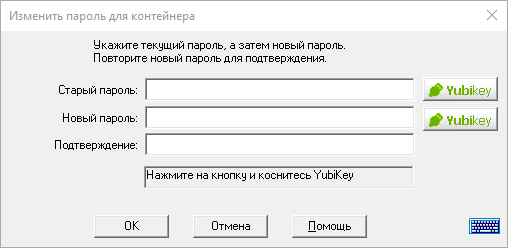

Для изменения мастер-пароля откройте контейнер, пароль которого требуется изменить. После этого в меню Сервис выберите пункт Изменить пароль для контейнера. Будет отображён следующий диалог:

Примечание. Если у вас нет YubiKey, соответствующие кнопки не будут отображены, и вы можете пропустить описание их использования.
Для изменения мастер-пароля откройте контейнер, пароль которого требуется изменить. После этого в меню Сервис выберите пункт Изменить пароль для контейнера. Здесь необходимо ввести текущий мастер-пароль, а затем, новый пароль (вводится дважды, для подтверждения). Для ввода пароля можно использовать физическую или экранную клавиатуру.
Password Safe имеет встроенные средства проверки сложности мастер-пароля. Мастер-пароль (как и любой другой) должен состоять из букв разного регистра, содержать хотя бы одну цифру или специальный символ (например, один из тех, что расположены над цифрами на клавиатуре). Если программа решит, что выбранный пароль является слабым, будет выдан запрос подтверждения. Вы можете подтвердить использование введённого «слабого» пароля, или ввести новый пароль.
При включенном флажке «Показать пароль» старый и новый пароли будут отображены, а поле подтверждения пароля будет заблокировано за ненадобностью.
Для тех, кто использует YubiKey: в дополнение к функции смены мастер-пароля, этот диалог позволяет добавить или убрать аутентификацию при помощи YubiKey, установить или убрать пароль, используемый вместе с YubiKey, или привязать к контейнеру другой ключ YubiKey. Ниже приведены инструкции по выполнению перечисленных действий.
Добавление аутентификации при помощи YubiKey
Чтобы изменить способ аутентификации при доступе к контейнеру Password Safe с мастер-пароля на YubiKey:
Введите текущий мастер-пароль в поле «Старый пароль».
Подключите YubiKey
Если требуется, введите (и подтвердите) новый пароль в поля «Новый пароль» и «Подтверждение».
Нажмите на кнопку с надписью YubiКey, расположенную рядом с полем Новый пароль и коснитесь кнопки на устройстве YubiKey.
Удаление аутентификации при помощи YubiKey
Для того, чтобы изменить параметры аутентификации при доступе к контейнеру на использование только мастер-пароля:
Подключите YubiKey.
Если для доступа к контейнеру также используется пароль, введите его в поле «Старый пароль».
Нажмите на кнопку с надписью YubiКey, расположенную рядом с полем Старый пароль и коснитесь кнопки на устройстве YubiKey.
Введите новый пароль и его подтверждение в соответствующие поля.
Нажмите OK.
Добавление/удаление/изменение мастер-пароля
Password Safe может использовать YubiKey как единственный способ аутентификации, так и как дополнительный к обычному паролю. Для переключения между этими режимами:
Подключите YubiKey.
Если для доступа к контейнеру также используется пароль, введите его в поле «Старый пароль».
Нажмите на кнопку с надписью YubiКey, расположенную рядом с полем Старый пароль и коснитесь кнопки на устройстве YubiKey.
В полях «Новый пароль» и «Подтверждение» установите пустое значение, чтобы отключить проверку пароля, или новый пароля чтобы изменить или добавить проверку пароля.
Нажмите на кнопку с надписью YubiКey, расположенную рядом с полем Новый пароль и коснитесь кнопки на устройстве YubiKey.
Изменение YubiKey
Для привязки другого YubiKey:
Подключите старый YubiKey.
Если для доступа к контейнеру также используется пароль, введите его в поле «Старый пароль».
Нажмите на кнопку с надписью YubiКey, расположенную рядом с полем Старый пароль и коснитесь кнопки на устройстве YubiKey.
Отключите старый YubiKey и подключите новый.
Если требуется, введите (и подтвердите) новый пароль в поля «Новый пароль» и «Подтверждение».
Нажмите на кнопку с надписью YubiКey, расположенную рядом с полем Новый пароль и коснитесь кнопки на устройстве YubiKey.
Примечания:
В Password Safe не существует механизма для восстановления потерянных (забытых) мастер-паролей. Это осознанное решение разработчиков, так как любой механизм восстановления потерянных паролей является брешью в системе защиты и может быть использован злоумышленниками.
Всегда выбирайте пароли, которые сложно угадать. Простой пароль, такой как «пароль» или ваше имя, легко подбирается и сводит на нет защиту, обеспечиваемую Password Safe.